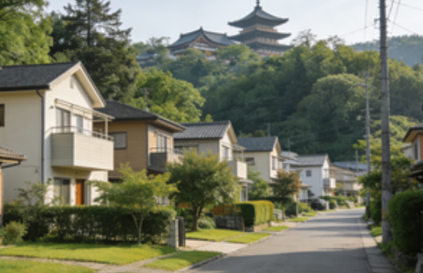
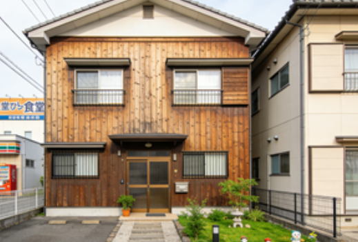

山科区（Yamashina-ku）賃貸情報

山科区は京都市東部に位置する郊外の行政区で、滋賀県との県境に近い。区内は主に住宅地が広がり、静かな環境で家族層に人気が高い。
山科駅周辺は商業施設が充実し、スーパー・薬局・病院など生活必需品を扱う店舗が集まっている。また醍醐寺が区内にあり、歴史的景観も楽しめる。交通は山科駅から京都市中心部へ約30分程度で到着し、通勤通学に便利な立地となっている。
山科区の特徴
- 特徴：郊外の静かな住宅地
- メリット：落ち着いた環境・賃料が控えめ・生活施設が充実
- デメリット：中心部までの通勤距離が長め
- 賃料例：1K約55,000円〜、1LDK約80,000円〜、2LDK約105,000円〜
推奨物件タイプ

山科駅徒歩7分 1K：約56,000円。木造アパートの物件で、南向きの部屋で採光が良い。近隣にコンビニと食堂がある。
八幡市境 2LDK：約82,000円。低層マンションの物件で、駐車場が2台分付属。学区内に位置し子育てに適している。
醍醐寺近隣 3LDK：約110,000円。一戸建ての物件で、庭付きで緑が多い。静かな環境で長期滞在に適している。